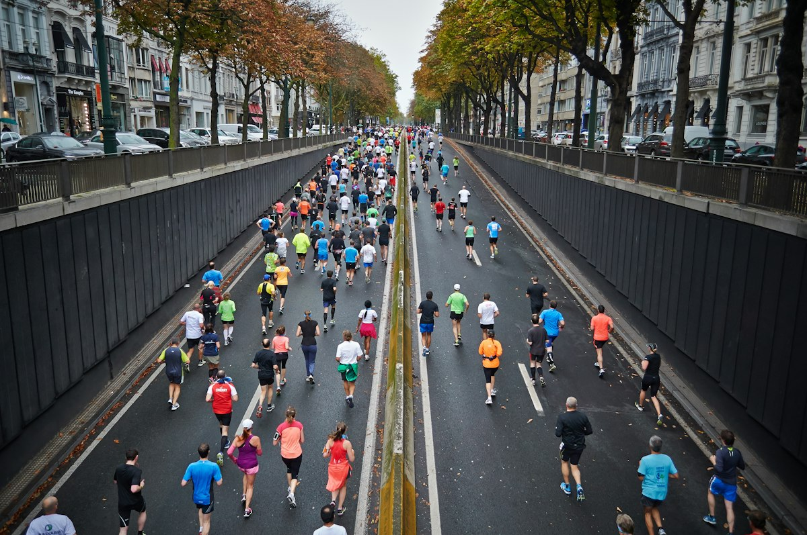

24 octobre 2027
Ton marathon, clair dès le premier écran.
Pré-inscriptions 2027 ouvertes. Édition 2026 sold out. Parcours, horaires et ravitos enfin accessibles en un geste.
--jours
--heures
--min
--sec
Photo : Samuel Clara / Unsplash
Parcours interactifKm, ravitos officiels, dénivelé — pensé pour le mobile
Pose ta question
Assistant d’exemple : réponses à partir des contenus officiels, avec lien source.
Ce qui change pour toi
Pensé à partir d’une difficulté réelle : retrouver plan et infos le week-end de course.
Accès rapide
Sponsors & partenaires (visuels du site officiel)